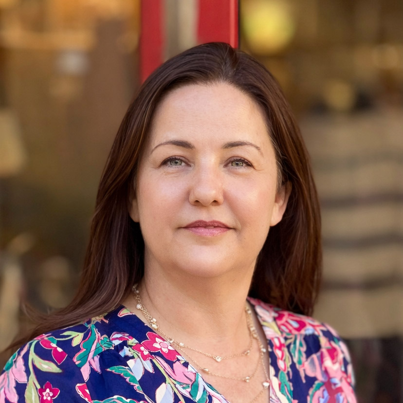

Serving the Palos Verdes peninsula

Sonya
After years of nurturing a deep passion for skincare, I turned that love into a fulfilling profession. I hold an Associate of Arts degree in Esthetics, along with numerous certifications, which have given me a strong foundation in both the science and artistry of skincare.
My journey to becoming an esthetician is deeply personal. As a two-time cancer survivor, I've experienced firsthand the impact illness and treatment can have on the skin and the spirit. That experience gave me a deeper understanding of how essential it is to feel comfortable and cared for. It's one of the many reasons I bring empathy, intention, and compassion to every treatment.
My approach is rooted in the belief that skincare is never one-size-fits-all. I remain immersed in the ever-evolving world of esthetics through continuous learning and advanced training, enabling me to offer personalized, effective treatments tailored to each client's unique needs. Whether someone is seeking a moment of self-care or solutions to specific skin concerns, my goal is always to help them feel confident, radiant, and truly at ease in their skin.